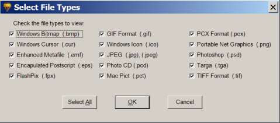

Select File Types for Photo Mud Explorer
Previous
Top
Next
Photo Mud Explorer displays photo files in the currently selected folder. You can select the types of files to be displayed by choosing
Select Photo File Types
from the
Tools
menu of Photo Mud Explorer.
